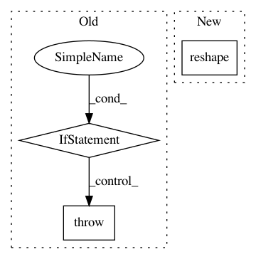

738c8758e30c6f8bdf9155529aeb431547af65d6,python/caffe/pycaffe.py,,_Net_set_mean,#,184
Before Change
raise Exception("Input not in {}".format(self.inputs))
mean = np.load(mean_f)
if mode == "elementwise":
if mean.shape != self.input.data.shape[1:]:
raise Exception("The mean shape does not match the input shape.")
self.mean[input_] = mean
elif mode == "channel":
self.mean[input_] = mean.mean(1).mean(1)
else:
After Change
in_shape[2:]).transpose((2,0,1))
self.mean[input_] = mean
elif mode == "channel":
self.mean[input_] = mean.mean(1).mean(1).reshape((in_shape[1], 1, 1))
else:
raise Exception("Mode not in {}".format(["elementwise", "channel"]))
In pattern: SUPERPATTERN
Frequency: 3
Non-data size: 3
Instances
Project Name: BVLC/caffe
Commit Name: 738c8758e30c6f8bdf9155529aeb431547af65d6
Time: 2014-05-19
Author: shelhamer@imaginarynumber.net
File Name: python/caffe/pycaffe.py
Class Name:
Method Name: _Net_set_mean
Project Name: astroML/astroML
Commit Name: dcd7ce51473d875401d39cd0bc1c3c1cdc2023e1
Time: 2015-05-08
Author: ajc.atwork@gmail.com
File Name: astroML/resample.py
Class Name:
Method Name: bootstrap
Project Name: keras-team/keras-preprocessing
Commit Name: 75c9e8cbcd9da21591cd5f8aaaa99205f48fa606
Time: 2021-01-19
Author: eli.osherovich@gmail.com
File Name: keras_preprocessing/image/image_data_generator.py
Class Name: ImageDataGenerator
Method Name: fit